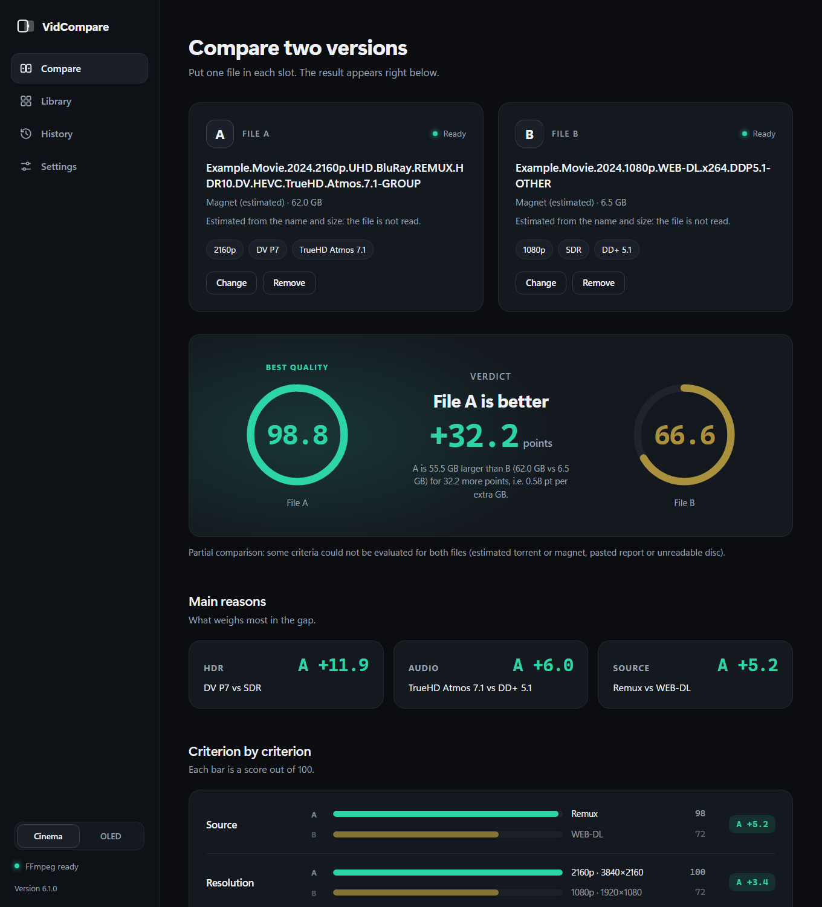

VidCompare
Two video files. Which one is better? Get a score out of 100 for each, and the reasons why. Free, open source, runs on your PC.

Understands your files
Source (Remux, BluRay, WEB-DL), resolution, bitrate, codec, HDR10, HDR10+, Dolby Vision, TrueHD Atmos, DTS-HD and channels.
Catches fakes
A "Remux" with a low bitrate, a 4K that is upscaled, a missing audio track, mismatched names.
Fits your setup
Tell it your TV and sound system. Formats your hardware cannot play are scored down.
Optional VMAF
Compare real frames side by side and measure similarity with Netflix's VMAF metric.
Library mode
Rank a whole folder and see which movies or seasons would gain the most from a better version.
10 languages
English, 中文, हिन्दी, Español, العربية, Français, বাংলা, Português, Русский, Bahasa Indonesia.
Private by design
Nothing leaves your computer. No account, no telemetry. The only network request is an optional once-a-day check for a newer version, which you can turn off. Privacy details.
Install
Windows 10 or 11, 64-bit. Download the installer from Releases, or with winget once available:
winget install BixSopy.VidCompare
FFmpeg is required to read videos (winget install Gyan.FFmpeg). The installer can do it for you. The app is not code-signed yet, so Windows SmartScreen may show a warning: choose "More info", then "Run anyway".
Honest limits
Scores are estimates from file metadata, not a perceptual measurement. Torrent and magnet scores are guesses from the name and size. VidCompare reads names and sizes only: it does not search for, download or share anything. Translations are machine-made and need native review: help fix them.
En français
VidCompare compare la qualité de deux fichiers vidéo, torrents ou rapports MediaInfo, et donne une note sur 100 à chacun. Gratuit, libre (MIT), 100 % local. Télécharger · Documentation